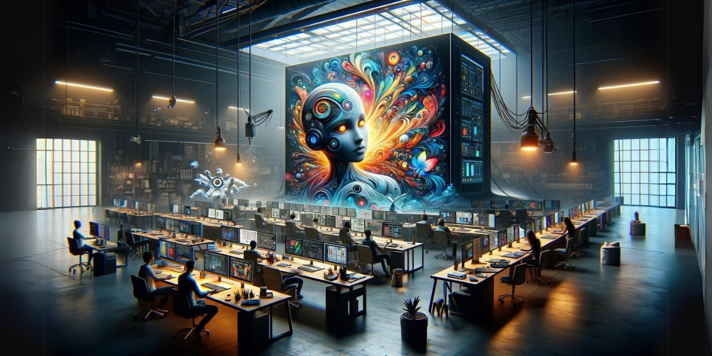
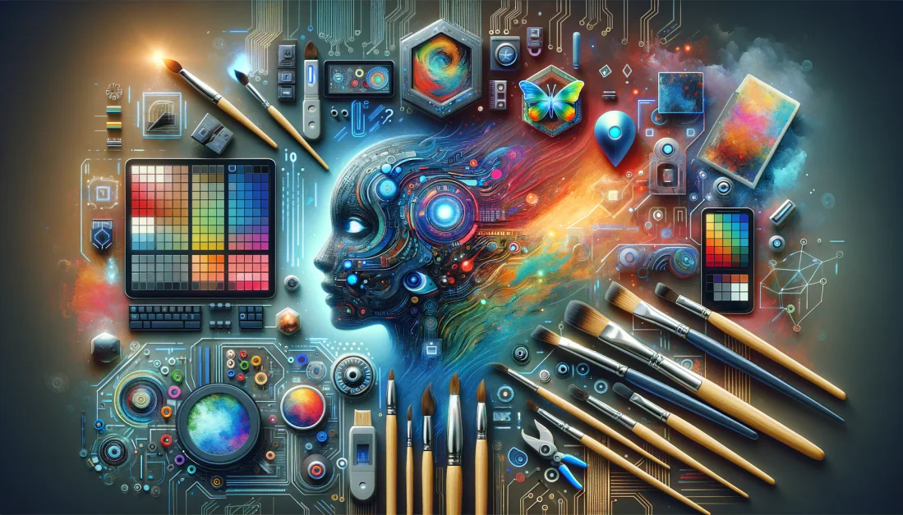

IA e o Futuro do Design Gráfico: Criatividade Otimizada
A inteligência artificial (IA) está transformando o design gráfico, não para substituir designers, mas para ser uma poderosa aliada. A IA automatiza tarefas repetitivas, como a remoção de fundos ou o redimensionamento de imagens, e ajuda na geração de conceitos visuais com ferramentas como Midjourney e DALL-E.
___________________________________________________.


Apesar de sua capacidade, a IA não tem o senso estético, a empatia ou a compreensão de contexto que são essenciais no design. O designer é quem garante a originalidade e a mensagem de um projeto.
O futuro do profissional de design é ser um estrategista visual e diretor criativo. Usando a IA como ferramenta para o trabalho pesado, ele se concentra em tarefas de alto nível, como estratégia de marca, direção de arte e inovação, fortalecendo a colaboração entre a inteligência humana e a artificial.